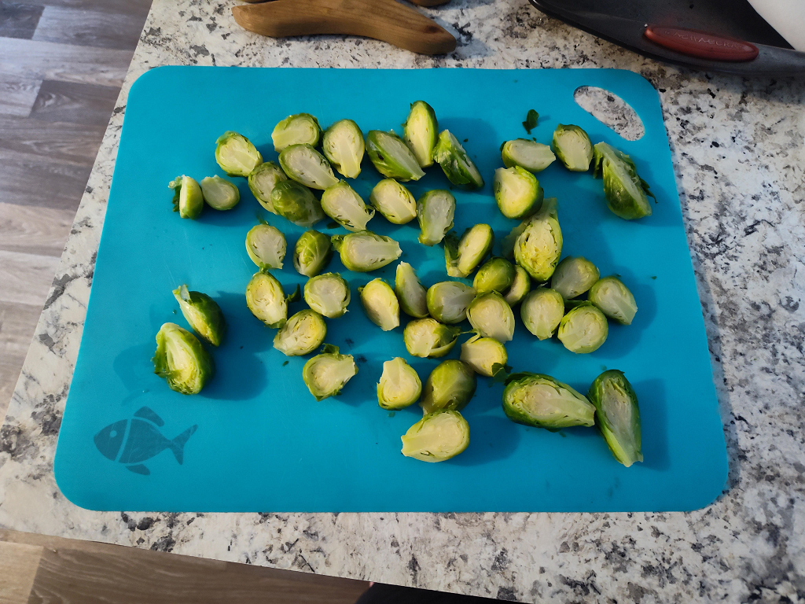
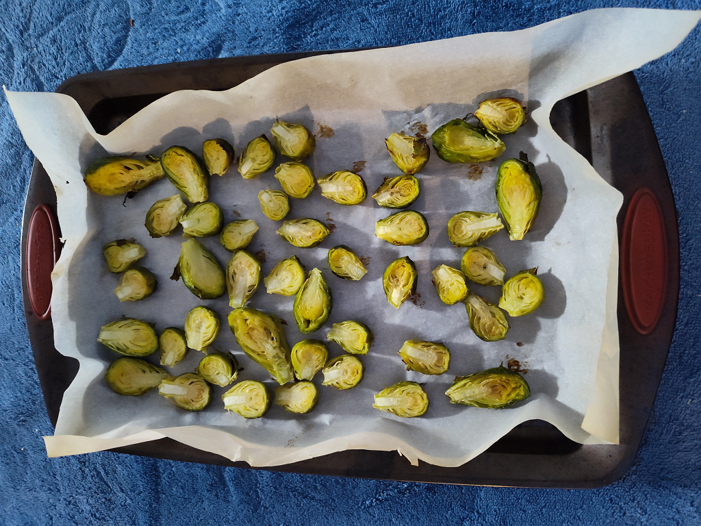
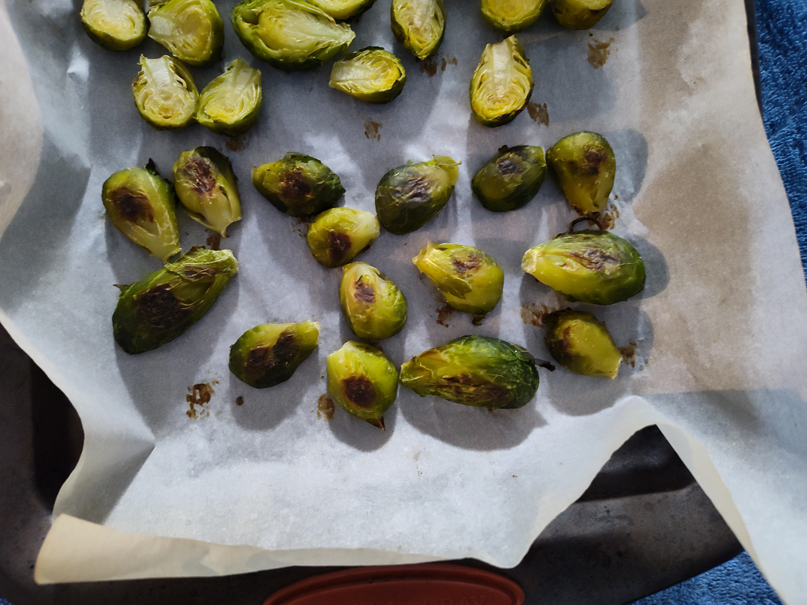
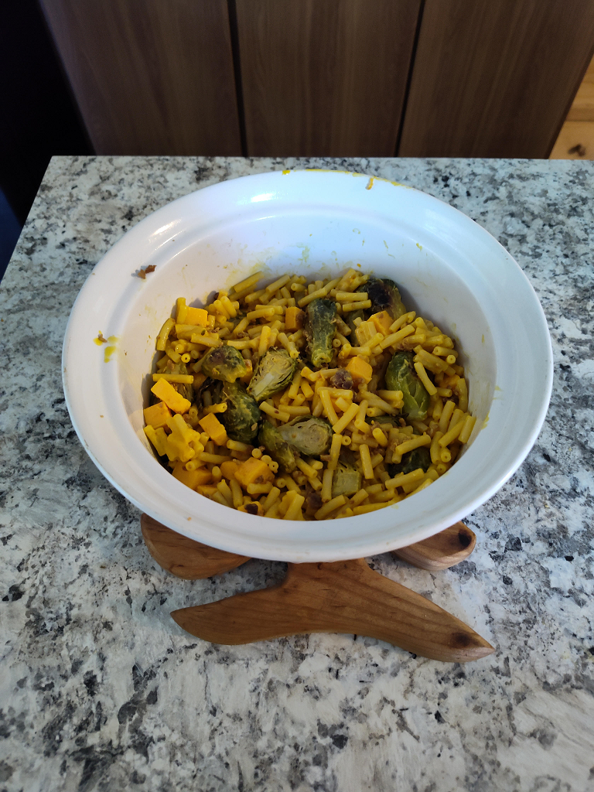
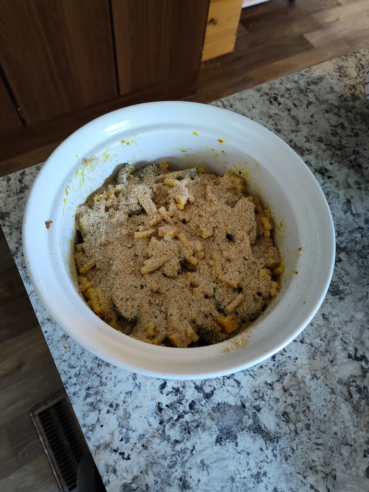
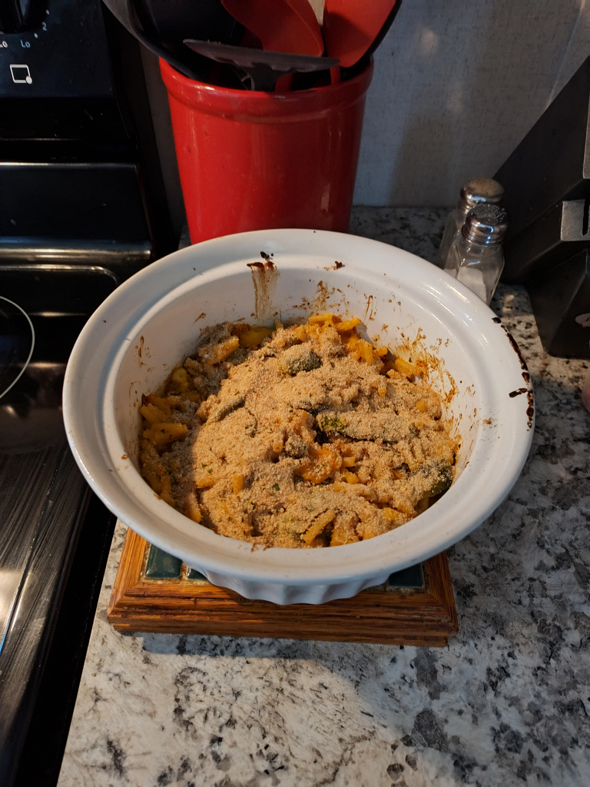
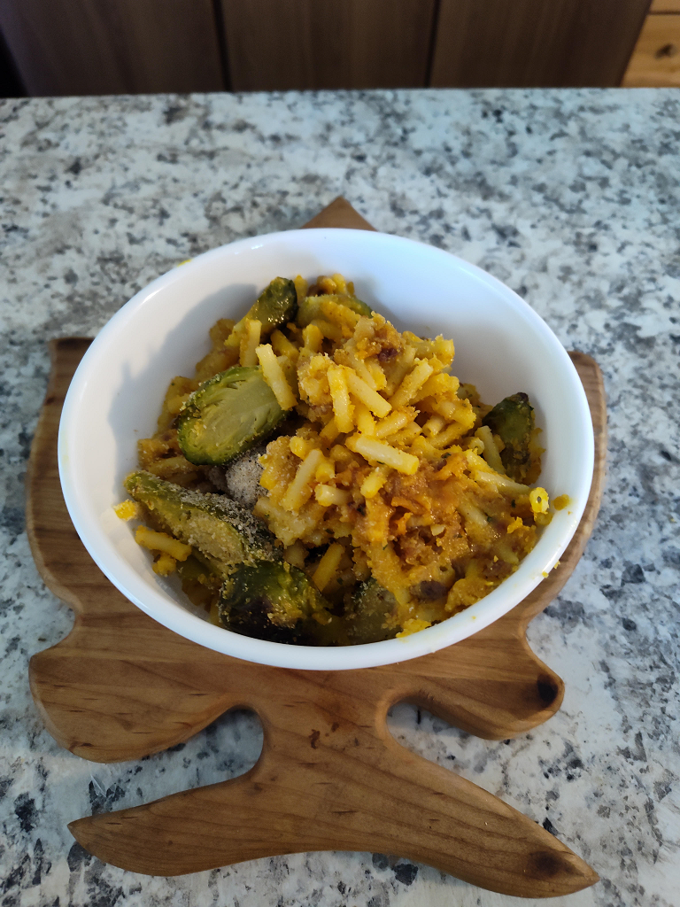

Rebekah's Brussel Sprout & Bacon Mac and Cheese Casserole
What I use for this recipe (feel free to make changes to suit your preferences, dietary needs, or your store doesn't
carry the brand):
- 1 box Kraft mac and cheese
- 2% Great Value milk (for the Kraft mac and cheese)
- Blue Bonnet stick butter (for the Kraft mac and cheese)
- 8oz block Great Value extra sharp cheddar cheese (you may also use mild, medium, or sharp as well. I personally
find extra sharp has the most flavor.)
- 12oz bag frozen Great Value brussel sprouts
- 2.5oz pouch Great Value real bacon pieces
- 15 oz can Great Value Italian style bread crumbs
- 8oz Great Value butter nonstick cooking spray
- Texas Pete hot sauce, any size **optional**
Steps
- Begin preheating the oven to 450°.
- Chop 1/3 cup of your preferred cheese into cubes or you can also shred the cheese if you like.
- Microwave bag of brussel sprouts following the instructions on the back of the bag (I only use half the bag for
this recipe but I go ahead and bake the whole bag so that I can make this recipe again the next day.)
- Drain the excess water from your microwaved brussel sprouts in a strainer.
- Cut the drained brussel sprouts in half.

- Cover a baking tray with parchment paper.
- Spread the halved brussel sprouts evenly in your baking tray with the cut halves facing upwards.
- Bake the brussel sprouts for about 10 - 15 minutes until browned on the bottom and slightly brown on top, there
is no need to flip the brussel sprouts (while you're waiting for the brussel sprouts to bake, go ahead and begin
step 9). This is how they should look when done:


- Follow the cooking instructions for your choice of mac and cheese (if you use Kraft, I highly suggest cooking
the mac and cheese for 5 minutes instead of the 7-8 minutes that the instructions tell you to so your pasta is
al dente. Also the Kraft brand makes in total 3 cups prepared mac and cheese. I only end up making 2 cups for
this recipe for me and I save the last cup for Skylar but this recipe can be tweaked if you want to use the
whole box as to not waste any food.)
- Once the mac is cheese is fully finished and prepared, coat a casserole dish with the nonstick cooking spray.
- Combine and mix together 2 cups of your prepared mac and cheese, half the bag of the roasted brussel sprouts, 2
tablespoons real bacon pieces, and the 1/3 cup of cheddar cheese. DO NOT ADD THE BREAD CRUMBS YET!!

- Add the 1/4 cup Italian style bread crumbs in an even layer on top. DO NOT STIR!!

- Bake until top is brown and crispy, about 20 - 30 minutes. This is how it should look when done:

- Enjoy!!! (I personally like to eat mine with hot sauce for that extra kick)
